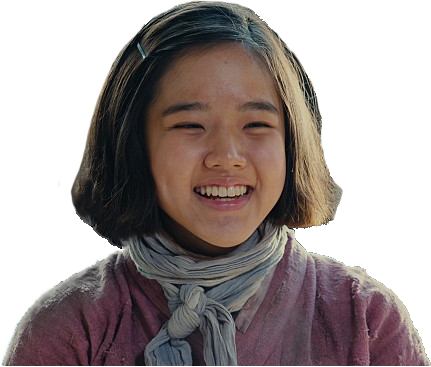
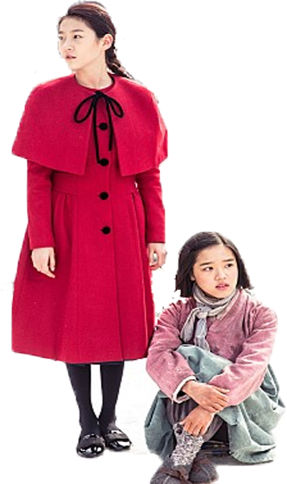

영화 [눈길]
“난 한번도 혼자라 생각해본 적 없다. 네가 살아야 내도 산다.” 1944년 일제강점기 말, 가난하지만 씩씩한 ‘종분’과 부잣집 막내에 공부까지 잘하는 ‘영애’와 같은 마을에서 태어났지만 전혀 다른 운명을 타고난 두 소녀. 똑똑하고 예쁜 영애를 동경하던 ‘종분’은 일본으로 떠나게 된 ‘영애’를 부러워하며 어머니에게 자신도 일본에 보내달라고 떼를 쓴다.
어느 날, 어머니가 집을 비운 사이 남동생과 단 둘이 집을 지키던 ‘종분’은 느닷없이 집으로 들이닥친 일본군들의 손에 이끌려 낯선 열차에 몸을 싣게 된다. 영문도 모른 채 끌려온 ‘종분’은 자신 또래 아이들이 가득한 열차 안에서 두려움에 떨고, 그때 마침 일본으로 유학간 줄 알았던 '영애'가 열차 칸 안으로 던져진다. 이제는 같은 운명이 되어버린 두 소녀 앞에는 지옥 같은 전쟁이 펼쳐지고, 반드시 집에 돌아갈 거라 다짐하는 ‘종분’을 비웃듯 ‘영애’는 끔찍한 현실을 끝내기 위해 위험한 결심을 하는데…

감독의 말
전쟁이 끝나기를 기다렸던 평범한 사람들에 대해 생각한다. 폭력이 끝나기를
기다렸던 작은 소녀들에 대해 생각한다.
누군가의 이불을 끌어 올려 덮어주고, 앙상하고
마른 손을 서로 꼭 맞잡아 주고, 누군가의 가슴팍에 머리를
대고 심장소리로 생사를 확인해주던, 폭력의
한 가운데 외롭게 서있었지만 서로 연결되어 있던
마음들.
이 작품은 갇혀버린 소녀들의 삭막한 겨울
이야기지만 ‘나는 한번도 혼자 인 적 없었다’고
이야기 하는 이들의 따뜻한 연대에 대해
그리고 있다.
우리는 함께 연결되어 있다.
ABOUT MOVIE
치유와 위안이 필요한 시대에 꼭 봐야 할 영화!
세계가 먼저 주목하고 인정한 우리 시대 필람 영화 눈길
학교도 다니고, 글도 읽을 줄 아는 부잣집 막내딸 ‘영애’와
그런 영애를 동경하던 가난한 소녀 ‘종분’이 끔찍한 곳에서
만나게 되며 운명을 함께하게 된다. 같은 비극을 살게 된 너무도
다른 두 소녀를 그리는 눈길은 “끔찍한 폭력의 순간을
‘영화적 스펙터클’로 이용하지 않으려 주의를 기울였다.
그 폭력으로
아픔을 겪은 분들이 계시고 그것이 아직 제대로 해결되지 않은
시점에서는 더욱 신중해야 한다고 생각했다”는
이나정 감독의 말처럼, 일본군 ‘위안부’ 피해자들의 이야기를
단순히 보여주는 데서 그치지 않고, 그들의 아픔을 관객과 함께
느끼고 위로하고자 만들어진 작품이다. 함께 아파하고,
서로가 살아낼 수 있도록 손을 내밀어 외롭고 힘든 순간을 견뎌낸
‘종분’과 ‘영애’의 마음을 있는 그대로 전달하고자 했던 감독과 작가,
배우들의 노력이 더해져, 눈길은 당시 어린 소녀들이 겪어야 했던 아픔을
그대로 느낄 수 있게 하는데 성공한다. “그 끔찍한 상황을 견딜 수 있었던
힘은 무엇이었을까? 주변에 나와 같은 친구, 나의 아픔을 알아주는 사람들,
공감할 수 있는 사람들이 있었기 때문이지 않았을까”라는 생각에서 작업을
시작하게 되었다는 류보라 작가의 말에서 알 수 있듯, 눈길은 위로와 공감의
힘을 이야기 하는 영화이다.